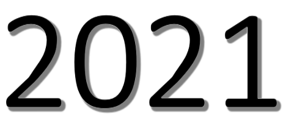
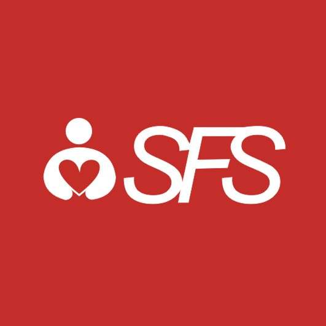

In this class, students will have the opportunity to explore these questions and develop creative pieces of writing under the guidance of an experienced writing coach. Throughout the class, students will have the opportunity to read, analyze and discuss quality works of fiction and to experiment with different writing styles and techniques. Students will be asked to not only develop their own works but to brainstorm as a group, learning how to receive and offer feedback, and how to use that feedback to strengthen a story over time.
In this class students will have the chance to learn the fundamentals of computer science with Python. Students will learn to think through problems and mathematics principles using coding language. In the process students will be able to read and discuss coding articles in English, and explore fun examples. Opportunities will also be provided to research and write about modern applications of coding across industries, and to think about the link between computer science and design.